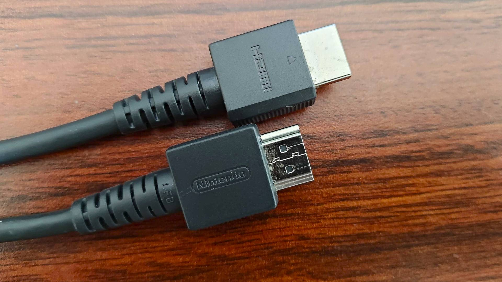

Room 560
Locate the Crestron panel and enter access code 2021.
Plug in the HDMI cable attached to the rack to your computer.
Select HDMI on the Crestron touch panel.
For sound, on your computer select “Crestron” as the audio playback device.
- *If connected to an iPad, the volume can only be adjusted by the panel*
- If there’s no sound: Ensure the program volume on the Crestron touch panel is up